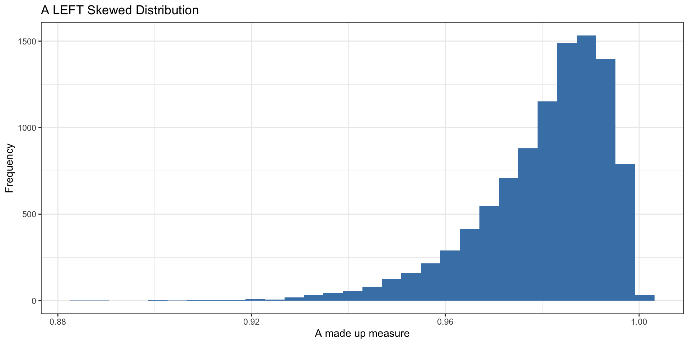
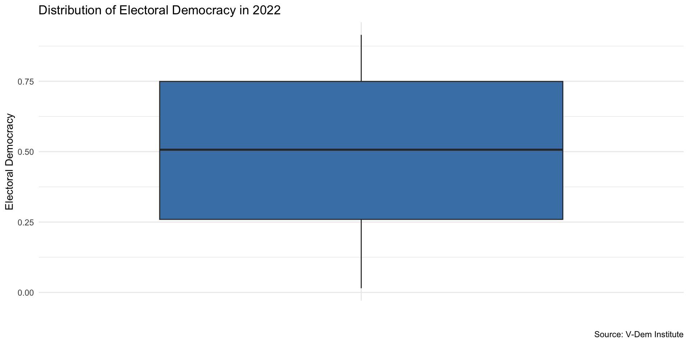

library(tidyverse)
library(vdemdata)
vdem2022 <- vdem |>
filter(year == 2022) |>
select(
country = country_name,
regime = v2x_regime,
region = e_regionpol_6C
) |>
mutate(
region = case_match(region, # replace the values in region with country names
1 ~ "Eastern Europe",
2 ~ "Latin America",
3 ~ "Middle East",
4 ~ "Africa",
5 ~ "The West",
6 ~ "Asia")
) |>
mutate(regime = case_match(regime,
0 ~ "Closed Autocracy",
1 ~ "Electoral Autocracy",
2 ~ "Electoral Democracy",
3 ~ "Liberal Democracy")
)Categorical Data
June 20, 2024
Today’s Classwork
- Download classwork folder for today’s class from here
Thinking About Data
What are some ways we can classify data? üòé üí≠
- anecdotal vs. representative
- census vs. sample
- observational vs. experimental
- categorical vs. numerical
- discrete vs. continuous
- cross-sectional vs. time series
- longitudinal vs. panel
- unstructured vs. structured
What are some ways we can classify data? üòé üí≠
- anecdotal vs. representative
- census vs. sample
- observational vs. experimental
- categorical vs. numerical
- discrete vs. continuous
- cross-sectional vs. time series
- longitudinal vs. panel
- unstructured vs. structured
Variable Types
- Categorical
- Binary - two categories
- Nominal - multiple unordered categories
- Ordinal - multiple ordered categories
- Numerical
- Continuous - fractional values (measurement data)
- Discrete - non-negative whole numbers (count data)
What types of variables are these? ü§î
- Is a country a democracy? (yes/no)
- Polity (-10 to 10 in 1 unit increments)
- V-Dem Polyarchy (0-1 in 0.01 increments)
- V-Dem Regimes of the World Measure
- closed autocracy | electoral autocracy | electoral democracy | democracy
- Number of protest events
- Protest types (sit in, march, strike, etc.)
Categorical Data
V-Dem Regimes of the World Measure
- Closed Autocracy
- Electoral Autocracy
- Electoral Democracy
- Liberal Democracy
Data Setup
Examine the Data
Let’s count the number of regimes by type…
Now let’s visualize the distribution of regimes with a bar plot…
Now let’s visualize the distribution of regimes with a bar plot…
Now let’s visualize the distribution of regimes with a bar plot…
More about geom_bar()
geom_bar()is different fromgeom_col()- Used to create bar plots where the height of the bar represents counts or frequencies of categorical variable
- By default, geom_bar() counts the number of occurrences of each category or group and plots it as the height of the bar
- Like
geom_histogram(),geom_bar()only requires the x aesthetic (y is automatically calcualted for you)
Your Turn!
- Expore the distribution of regimes for a different year
- Preprocess your data to include only the year you are interested in
- Visualize the distribution of regimes using
geom_bar() - Use the
labs()function to change title - What is different about the year that you chose relative to 2022?
05:00
How do Regimes Vary by Region?
How do Regimes Vary by Region?
How do Regimes Vary by Region?
What Did We Just Do?
- We used
geom_bar()to visualize the distribution of regimes by region - Essentially, we used two categorical variables to create a bar plot
- Regime type is…
- …an ordered categorical variable
- Region is…
- …a nominal categorical variable
Some regions have more countries than others. Why does this create an issue for telling a story with our data here?

Show Proportions Instead
We use position = "fill" to normalize the data and make the plot more interpretable…
vdem2022 %>%
ggplot(., aes(x = region, fill = regime)) +
geom_bar(position = "fill") +
theme_minimal() +
labs(
x = "Region",
y = "Proportion",
title = "Regimes of the World by World Region in 2022",
caption = "Source: V-Dem Institute",
fill = "Regime"
) +
scale_fill_viridis_d(option = "inferno", end = .8)Your Turn!
- Explore the distribution of regimes by region for a different year
- Preprocess your data to include only the year you are interested in
- Visualize the distribution of regimes using
geom_bar()andposition = "fill" - Use the
labs()function to change title - What is different about the year that you chose relative to 2022?
05:00
Electoral Democracy Measure
- To what extent is the ideal of electoral democracy in its fullest sense achieved?
- Measure runs from 0 (lowest) to 1 (highest)
- 0.5 is a cutoff for distinguishing electoral democracy from electoral autocracy
The electoral principle of democracy seeks to embody the core value of making rulers responsive to citizens, achieved through electoral competition for the electorate’s approval under circumstances when suffrage is extensive; political and civil society organizations can operate freely; elections are clean and not marred by fraud or systematic irregularities; and elections affect the composition of the chief executive of the country. In between elections, there is freedom of expression and an independent media capable of presenting alternative views on matters of political relevance. – V-Dem Codebook
Other High-Level V-Dem Measures
- Liberal Democracy
- Egalitarian Democracy
- Participatory Democracy
- Deliberative Democracy
All continuous measures, ranging from 0 to 1. Let’s take a look at how to summarize data like this!
Data Setup
# Load packages
library(vdemdata)
library(tidyverse)
# Create dataset for year 2022, with country name, year, and electoral dem
vdem2022 <- vdem |>
filter(year == 2022) |>
select(
country = country_name,
year,
polyarchy = v2x_polyarchy,
region = e_regionpol_6C
) |>
mutate(region = case_match(region,
1 ~ "Eastern Europe",
2 ~ "Latin America",
3 ~ "Middle East",
4 ~ "Africa",
5 ~ "The West",
6 ~ "Asia")) Examine the Data
Rows: 179
Columns: 4
$ country <chr> "Mexico", "Suriname", "Sweden", "Switzerland", "Ghana", "Sou…
$ year <dbl> 2022, 2022, 2022, 2022, 2022, 2022, 2022, 2022, 2022, 2022, …
$ polyarchy <dbl> 0.571, 0.775, 0.896, 0.897, 0.664, 0.711, 0.817, 0.091, 0.20…
$ region <chr> "Latin America", "Latin America", "The West", "The West", "A‚ĶHow can we summarize measures of democracy? ü§î
We could calculate the mean.
The mean is the average of the values. Common measure of central tendency but sensitive to outliers.
How can we summarize measures of democracy? ü§î
We could calculate the median.
The median is the value that separates the higher half from the lower half of the data.
We can also describe the shape of the distribution…
- symmetric (e.g. normal)
- right-skewed
- left-skewed
- unimodal (one peak)
- bimodal (multiple peaks)
Histograms
- Used to represent the distribution of a continuous variable
- The x-axis represents the range of values
- The y-axis represents the frequency of each value
- The bars represent the number of observations in each range or “bin”
- The shape of the histogram can tell us a lot about the distribution of the data
Symmetric Distributions
Symmetric Distributions
Skewed Distributions
Skewed Distributions
Bimodal Distribution
When is the Mean Useful?
When is the Mean Useful?
When is the Mean Useful?
When is the mean useful?
- The Mean works well as a summary statistic when the distribution is relatively symmetric
- Not as well when distributions are skewed or bimodal (or multi-modal)
- With skewed distributions, the mean is sensitive to extreme values
- The median is more robust
Lesson
- Always look at your data!!
- When reading or in a presentation, ask yourself:
- Does the mean make sense given the distribution of the measure?
- Could extreme values in a skewed distribution make the mean not as useful?
- Have the analysts shown you the distribution? If not, ask about it!
Visualize Our Measure
Visualize Our Measure
mn <- mean(vdem2022$polyarchy)
med <- median(vdem2022$polyarchy)
ggplot(vdem2022, aes(x = polyarchy )) +
geom_histogram(binwidth = .05, fill = "steelblue") +
labs(
x = "Electoral Democracy",
y = "Frequency",
title = "Distribution of Electoral Democracy in 2022",
caption = "Source: V-Dem Institute"
) +
geom_vline(xintercept = mn, linewidth = 1, color = "darkorange") +
theme_minimal() Visualize Our Measure
mn <- mean(vdem2022$polyarchy)
med <- median(vdem2022$polyarchy)
ggplot(vdem2022, aes(x = polyarchy )) +
geom_histogram(binwidth = .05, fill = "steelblue") +
labs(
x = "Electoral Democracy",
y = "Frequency",
title = "Distribution of Electoral Democracy in 2022",
caption = "Source: V-Dem Institute"
) +
geom_vline(xintercept = mn, linewidth = 1, color = "darkorange") +
theme_minimal() Your Turn!
- Look at the V-Dem codebook
- Select a different high-level measure of democracy
- Preprocess your data to include tha measure in your data frame
- Calculate the mean and median and store as a variable
- Visualize the distribution of the measure
- Include a vertical line for the mean
- Now try the median
05:00
Recap
- We can use statistics like mean or median to describe the center of a variable
- We can visualize the entire distribution to charachterize the distribution of the variable
- We should also say something about the spread of the distribution
Why Measure and Visualize Spread?
Measures of Spread: Range
- Range (min and max values)
- Not ideal b/c does not tell us much about where most of the values are located
Measure of Spread: Interquartile Range
IQR: 25th percentile - 75th percentile
Interquartile Range
- The middle 50 percent of the countries in the data lie between 0.262 and 0.747
- The IQR (0.485) is the difference between the Q3 and Q1 values
Box Plot
- A box plot is a graphical representation of the distribution based on the median and quartiles
- It is a standardized way of displaying the distribution of data based on a five number summary: minimum, first quartile, median, third quartile, and maximum
Box Plot
Measure of Spead: Standard Deviation
- Can think of it as something like the “average distance” of each data point from the mean
Standard Deviation
- A low standard deviation indicates that the values tend to be close to the mean
- A high standard deviation indicates that the values are spread out over a wider range
Starting with Variance
- Variance is a step towards calculating the standard deviation.
- It quantifies the average squared deviation of each number from the mean of the data set.
Calculating Deviation from the Mean
- First, calculate the mean (\(\bar{X}\)) of the dataset.
- For each data point (\(X_i\)), calculate its deviation from the mean: \[e_i = X_i - \bar{X}\]
- Example with a mean of 5:
- For a data point where \((X_i = 0): (0 - 5 = -5)\)
- For a data point where \((X_i = 10): (10 - 5 = 5)\)
- Example with a mean of 5:
Squaring the Deviations
- Squaring each deviation (\(e_i\)) to eliminate negative values: \[e_i^2 = (X_i - \bar{X})^2\]
- Summing up all squared deviations: \[\sum_{i=1}^{n} (X_i - \bar{X})^2\]
- This sum represents the total squared deviation from the mean.
Calculating the Variance
- Divide the total squared deviation by \((n-1)\) (to account for the sample variance): \[\text{Variance} = \frac{1}{n-1} \sum_{i=1}^{n} (X_i - \bar{X})^2\]
- Using \((n-1)\) ensures an unbiased estimate of the population variance when calculating from a sample.
Deriving the Standard Deviation
- The standard deviation is the square root of the variance: \[s = \sqrt{\frac{1}{n-1} \sum_{i=1}^{n} (X_i - \bar{X})^2}\]
- Taking the square root converts the variance back to the units of the original data.
Standard Deviation Simple Example
Standard Deviation Simple Example
Standard Deviation Simple Example
Standard Deviation Simple Example
Standard Deviation Simple Example
Your Turn!
- Calculate measures of spread for the
polyarchyvariable in the V-Dem data (mean, median, IQR, standard deviation) - How would you interpret these measures?
- Try a box plot for the
polyarchyvariable - Try another variable in the V-Dem data
- How does it compare to
polyarchy?
05:00
Calculating Statistics by groups
- What if we want to describe electoral democracy and see how it differs by some different variable? For example, by world region, or by year?
- In this case we want to combine numerical summaries with categorical variables
- This brings us back to bar chart
Calculating Statistics by Groups
- Let’s calculate the mean and median of electoral democracy in each world region
- For this, we add the group_by() to our previous code
vdem2022 |>
group_by(region) |>
summarize(mean_dem = mean(polyarchy),
median_dem = median(polyarchy))# A tibble: 6 × 3
region mean_dem median_dem
<chr> <dbl> <dbl>
1 Africa 0.403 0.377
2 Asia 0.423 0.412
3 Eastern Europe 0.537 0.564
4 Latin America 0.607 0.685
5 Middle East 0.232 0.208
6 The West 0.856 0.855Calculating Statistics by Groups
- Let’s store our statistics as a new data object, democracy_region
democracy_region <- vdem2022 |>
group_by(region) |>
summarize(mean_dem = mean(polyarchy),
median_dem = median(polyarchy))
democracy_region# A tibble: 6 × 3
region mean_dem median_dem
<chr> <dbl> <dbl>
1 Africa 0.403 0.377
2 Asia 0.423 0.412
3 Eastern Europe 0.537 0.564
4 Latin America 0.607 0.685
5 Middle East 0.232 0.208
6 The West 0.856 0.855Visualize using our Bar Chart Skills
Numerical Variable by Group
How should we interpret this plot?
Your Turn!
- Make a bar chart summarizing
polyarchyor some other V-Dem variable - Now try your hand at a ridge plot
05:00